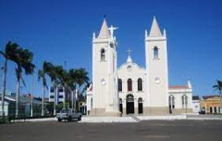
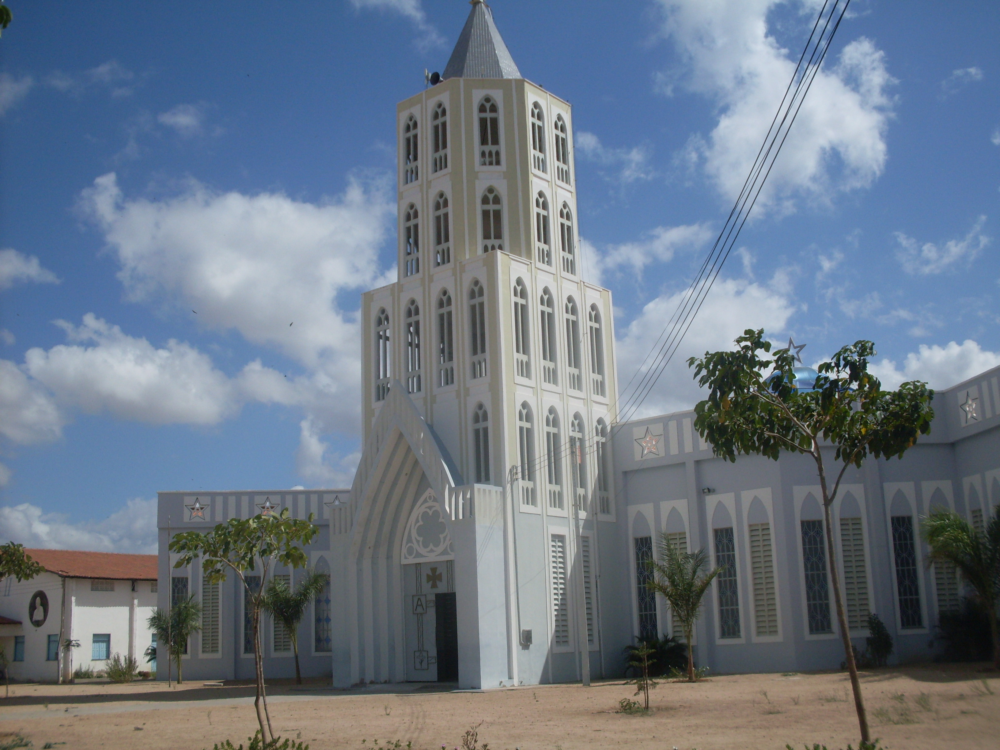

Informações técnicas sobre relevo, população, IDH etc.
| INFORMAÇÕES | |
|---|---|
| Municípios limítrofes | Poranga, Ipaporanga, Tamboril, Independência, Novo Oriente e o estado do Piauí (limite ainda em litígio com o Ceará). |
| Fundação | 6 de julho de 1832 (188 anos) |
| Área total | 2.981,459 km² |
| Clima | Tropical quente semiárido |
| IDH | 0,644 |
| PIB | R$ 9.105,67 |
| INFORMAÇÕES TERRITORIAIS | |
|---|---|
| Número de habitantes | 75 074 habitantes |
| Superfície de Crateús |
298 829 hectares
2988,29 km² |
| Densidade populacional | 25,1 ha./km² |
| Altitude de Crateús | 296 metros de altitude |
| Coordenadas geográficas decimais |
Latitude:
-5.19853
Longitude: -40.669 |
| Coordenadas geográficas sexagesimais | Latitude: 5° 11' 55'' Sul , Longitude: 40° 40' 8'' Oeste |
| INFORMAÇÕES DO MUNICÍPIO | |
|---|---|
| Endereço da Prefeitura Municipal de Crateús |
Crateús
Prefeitura de Crateús
Rua Galeria Gentil Cardoso, Nº20 - Centro Crateús - CE, 63.700-000 Brasil |
| Telefone da prefeitura |
(88) 3692-3315
Internacional: +55 88 3692-3315 |
| Fax |
88) 3692-3311
Internacional: +55 88 3692-3311 |
| Endereço electrónicoda prefeitura |
contato@crateus.ce.gov.br
|
| Site oficial do município | crateus.ce.gov.br |
| INFORMAÇÕES DO ADMINISTRATIVAS | ||
|---|---|---|
| Prefeito de Crateús | MARCELO FERREIRA MACHADO | |
| Partido politico | SOLIDARIED | |
| INFORMAÇÕES DE TRANSPORTE | |
|---|---|
| Transporte urbano disponível | - |
| Aeroporto |
Aeroporto de Sobral
172.8 km
Aeroporto de Picos
228 km
Aeroporto Senador Petrônio Portella
239.4 km
|
| INFORMAÇÕES DE DISTÂNCIA A OUTRAS CIDADES | ||
|---|---|---|
| São Paulo : 2141 km | Rio de Janeiro : 1990 km | Brasília : 1420 km |
| Salvador : 897 km | Curitiba : 2432 km | Belo Horizonte : 1666 km |
| Manaus : 2162 km | Fortaleza : 288 km mais perto | Recife : 715 km |
| Goiânia : 1585 km | Belém : 965 km | Porto Alegre : 2978 km |
| Guarulhos : 2120 km | Campinas : 2088 km | São Luís : 501 km |
| Distância calculada em linha reta! | ||
Conheça mais sobre a história de Crateús.
As terras de Crateús, ao sul da Chapada da Ibiapaba, e às margens do rio Poti, eram habitadas pelos índios Karatis, antes da chegada dos portugueses e bandeirantes no século XVII.
A vila Príncipe Imperial integrou o estado do Piauí até o ano de 1880, quando foi anexada ao território do Ceará, como resultado da solução encontrada para o litígio territorial entre esses dois estados. O Ceará reconheceu a jurisdição do Piauí sobre o município de Amarração (Luís Correia) e em troca o Piauí ofereceu dois importantes municípios piauienses: Independência e Príncipe Imperial.
Com a expansão da Estrada de Ferro de Sobral-Camocim para o Piauí, em 1911, as terras de Crateús foram cortadas pela ferrovia e, em 1912, duas estações de trem foram construídas no município: Crateús e Sucesso, e depois outras estações foram construídas em: 1916 Poti, em 1918 Ibiapaba, em 1932 Oiticica e Santa Terezinha.
Devido ao acidente geográfico, o canyon do rio Poti, que corta a Serra Grande, uma conexão natural entre Ceará e o Piauí, o mercantilismo entre os dois estados e o crescimento ao redor da estrada de ferro, Crateús desenvolveu-se como centro urbano e comercial no qual diversos grupos étnicos estão presentes, tanto etnias indígenas (Tabajara, Potyguara, Calabaça, Kariri, Tupinambá) como de descendentes africanos (Quilombos: Queimadas).
Saiba mais sobre os melhores lugares e o que fazer em Crateús.
 Paróquia de São Sebastião

Veja como chegar nos melhores pontos de Crateús